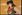

De: La Frikipedia, la enciclopedia extremadamente seria.
De: La Frikipedia, la enciclopedia extremadamente seria. De: La Frikipedia, la enciclopedia extremadamente seria.

Nota: Si buscas los artículos anteriormente enjuiciados en la picota, están aquí.
Bienvenidos al Vertedero, desarmando ilusiones a usuarios desde 1992.
Este es un lugar donde los usuarios proponen artículos para triturar o borrar cruelmente y votan a los ya propuestos para borrado. Las proposiciones para borrado han de hacerse en esta sección.
Las normas a seguir de la propuesta de artículos para borrado son:
===[[Nombreartículo]]===. Bajo esto, en negrita "propongo", "nomino" o lo que sea. Posteriormente, las causas por las cuales el artículo en cuestión merecería ser borrado (desde un punto de vista objetivo). Acuérdate además de firmar al final. {{Picota}} al artículo, o el juicio no tendrá validez. {{A favor}}. {{En contra}}. {{Comentario}}.
Para emitir su voto use las plantillas
 A favor (escribiendo
A favor (escribiendo {{A favor}})
 En contra (
En contra ({{En contra}})
o haga comentarios con
 Comentario (
Comentario ({{Comentario}})
Adicionalmente, para cambiar el texto en negrita que sale tras el ícono, puedes usar algo como {{A favor|¡Que arda!}}, que se mostraría como
 ¡Que arda!
¡Que arda!
| ACHTUNG!
El Vertedero es un espacio de debate y por ello es vital FUNDAMENTAR las opiniones. "¡Que arda!" es un ejemplo cualquiera, pero realmente preferimos que digas por qué apoyas o rechazas la nominación. Recuerda que las votaciones no se definen por cuatro votos a favor o cuatro en contra, sino por cuatro votos de diferencia. Por ejemplo, si hay dos votos en contra, se necesitarán seis votos a favor para borrarlo. |
 Malo y corto --Usuario:Lusia/Firma 12:23 sep 2015 (CEST)
Malo y corto --Usuario:Lusia/Firma 12:23 sep 2015 (CEST)
 Malo, copia de Wikipedia --Usuario:Lusia/Firma 12:23 sep 2015 (CEST)
Malo, copia de Wikipedia --Usuario:Lusia/Firma 12:23 sep 2015 (CEST)
 Malo --Ese mismo (discusión) 23:01 26 jul 2014 (CEST)
Malo --Ese mismo (discusión) 23:01 26 jul 2014 (CEST)
 Malo --Ese mismo (discusión) 23:01 26 jul 2014 (CEST)
Malo --Ese mismo (discusión) 23:01 26 jul 2014 (CEST)
 A favor --Usuario:Lusia/Firma 12:23 sep 2015 (CEST)
A favor --Usuario:Lusia/Firma 12:23 sep 2015 (CEST)
 Malo --Ese mismo (discusión) 20:13 20 jul 2014 (CEST)
Malo --Ese mismo (discusión) 20:13 20 jul 2014 (CEST)
 A favor --Usuario:Lusia/Firma 12:23 sep 2015 (CEST)
A favor --Usuario:Lusia/Firma 12:23 sep 2015 (CEST)
 Consulto --Ese mismo (discusión) 20:13 20 jul 2014 (CEST)
Consulto --Ese mismo (discusión) 20:13 20 jul 2014 (CEST)
 Consulto --Ese mismo (discusión) 20:13 20 jul 2014 (CEST)
Consulto --Ese mismo (discusión) 20:13 20 jul 2014 (CEST)
 Malo --Ese mismo (discusión) 20:13 20 jul 2014 (CEST)
Malo --Ese mismo (discusión) 20:13 20 jul 2014 (CEST)
 A favor --Usuario:Lusia/Firma 12:23 sep 2015 (CEST)
A favor --Usuario:Lusia/Firma 12:23 sep 2015 (CEST)
 Malo --Ese mismo (discusión) 19:58 20 jul 2014 (CEST)
Malo --Ese mismo (discusión) 19:58 20 jul 2014 (CEST)
 Consulto --Ese mismo (discusión) 19:58 20 jul 2014 (CEST)
Consulto --Ese mismo (discusión) 19:58 20 jul 2014 (CEST)
 Malo Tenia la plantilla pero no la habian nominado --Ese mismo (discusión) 19:28 20 jul 2014 (CEST)
Malo Tenia la plantilla pero no la habian nominado --Ese mismo (discusión) 19:28 20 jul 2014 (CEST)
 Malo --Ese mismo (discusión) 19:28 20 jul 2014 (CEST)
Malo --Ese mismo (discusión) 19:28 20 jul 2014 (CEST)
 Malo --Ese mismo (discusión) 19:28 20 jul 2014 (CEST)
Malo --Ese mismo (discusión) 19:28 20 jul 2014 (CEST)
 Lo he vuelto a leer,no sé que le vi antes pero ahora no me gusta--Hola zeñó 21:10 22 jul 2012 (CEST)
Lo he vuelto a leer,no sé que le vi antes pero ahora no me gusta--Hola zeñó 21:10 22 jul 2012 (CEST)
 Malo --Ese mismo (discusión) 03:43 8 feb 2012 (CET)
Malo --Ese mismo (discusión) 03:43 8 feb 2012 (CET)
 A adopción/reciclaje Mono
A adopción/reciclaje Mono  ತ_ತ 19:58 22 feb 2012 (CET)
ತ_ತ 19:58 22 feb 2012 (CET)
 Ya es de mi propiedad --
Ya es de mi propiedad -- (vis-à-vis) 04:31 25 mar 2012 (CEST)
(vis-à-vis) 04:31 25 mar 2012 (CEST)
 Sirve como punto de partida
Sirve como punto de partida  Deje su mensaje 03:43 29 jun 2013 (CEST)
Deje su mensaje 03:43 29 jun 2013 (CEST)
 En contra Lo mismo de arriba.--
En contra Lo mismo de arriba.--
Encuentrame y te volveras loco, de andar, y nada de amar.
 Consulto --Ese mismo (discusión) 16:30 3 feb 2012 (CET)
Consulto --Ese mismo (discusión) 16:30 3 feb 2012 (CET)
 Bah Hola zeñó 17:54 12 jul 2013 (CEST)
Bah Hola zeñó 17:54 12 jul 2013 (CEST)
 Bah --Ese mismo (discusión) 19:58 20 jul 2014 (CEST)
Bah --Ese mismo (discusión) 19:58 20 jul 2014 (CEST)
Las siguientes páginas contienen votaciones ya culminadas. Añadir allí su voto o nominación no tiene ninguna utilidad.
12 (Actual) --
ReciclajeAutor(es):